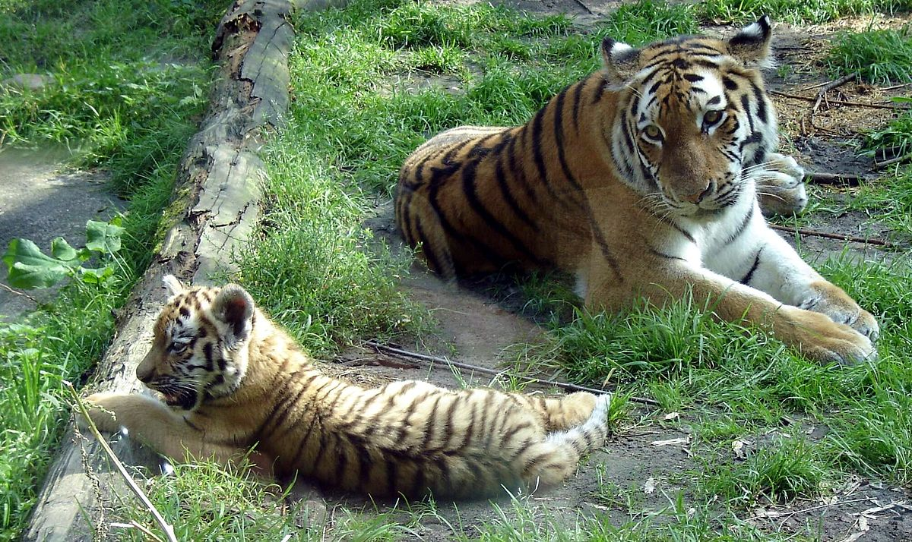

Klik hier om naar de website toe te gaan!
DierenPark Amersfoort is een bosrijk park waar onder meer neushoorns, apen, beren, tijgers, hyena’s,
olifanten, en verschillende vogels leven. Via de Klim Alles-route loopt de bezoeker op een trouwbrug
over de beren en staat hij oog in oog met vogels in de volière.